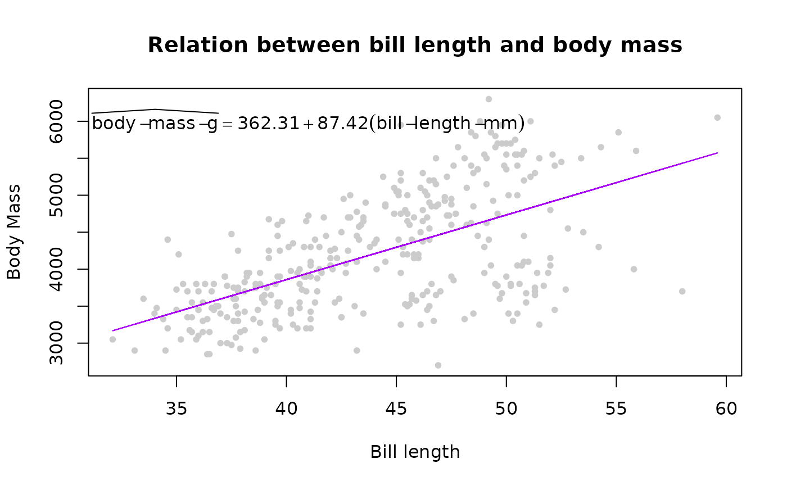

The {equatiomatic} package does not integrate natively with the {ggplot2} package because ggplot() requires a an expression, rather than raw LaTeX. The output of extract_eq, however, can be converted to a character vector, which can then be converted to an expression via the {latex2exp} package by Stefano Meschiari (or manual parsing from LaTeX to plotmath using your favorite string manipulation tools).
A simple use case
First, let’s load the libraries we’ll use here.
Next, we’ll need a model. Let’s fit a simple linear model to the palmerpenguins dataset (which is exported from {equatiomatic}) using bill length to predict body mass.
# Fit an lm model m <- lm(body_mass_g ~ bill_length_mm, penguins)
Now that we have our model, we can extract the equation using {equatiomatic}. We’ll do this showing the actual coefficients, since we’ll be using this to communicate the results in a figure.
extract_eq(m, use_coefs = TRUE)
\[ \operatorname{\widehat{body\_mass\_g}} = 362.31 + 87.42(\operatorname{bill\_length\_mm}) \]
Great! we can also show the relationship between these variables using {ggplot2} as follows.
ggplot(penguins, aes(x = bill_length_mm, y = body_mass_g)) + geom_point() + geom_smooth(method = "lm")

This is all well and good, but how do we get the equation to be incorporated into the figure? First, let’s store the equation into an object. Importantly, we must also extract the equation with ital_vars = TRUE. Using this option will prevent the use of \operatorname, which cannot be parsed by {latex2exp}. Additionally, there are a few other things that {latex2exp} tends to have difficulty handling. In this case, for example, we have underscores in our variable names, and {latex2exp} doesn’t like that (let’s replace them with dashes). {latex2exp} also doesn’t like the display version of equations when there are escaped greek letters in the equation (double $). We’ll therefore convert the display equation to an inline equation (replacing the $$ with $).
# extract equation with `ital_vars = TRUE` to avoid the use of `\operatorname` m_eq <- extract_eq(m, use_coef = TRUE, ital_vars = TRUE) # swap escaped underscores for dashes prep_eq <- gsub("\\\\_", "-", m_eq) # swap display-style $$ with inline-style $ prep_eq <- paste("$", as.character(prep_eq), "$", sep = "")
And now, we can use it with our figure directly. Below are a couple different examples.
ggplot(penguins, aes(x = bill_length_mm, y = body_mass_g)) + geom_point() + geom_smooth(method = "lm") + labs( title = "Relation between bill length and body mass", subtitle = TeX(prep_eq) )

ggplot(penguins, aes(x = bill_length_mm, y = body_mass_g)) + geom_point() + geom_smooth(method = "lm", color = "#ab00fa") + annotate("text", label = TeX(prep_eq), x = 35, y = 2500, hjust = 0, color = "#ab00fa" ) + labs(title = "Relation between bill length and body mass") + ylim(2000, 6500)
A more complete overview of {latex2exp} is available through the associated vignette shipped with the package.
Base graphics
In addition to {ggplot2}, we can use {equatiomatic} with base graphics using a similar approach. For example:
plot(penguins$bill_length_mm, penguins$body_mass_g, pch = 20, col = "gray80", xlab = "Bill length", ylab = "Body Mass", main = "Relation between bill length and body mass", sub = TeX(prep_eq) ) lines(na.omit(penguins$bill_length_mm), predict(m), col = "#ab00fa" )

plot(penguins$bill_length_mm, penguins$body_mass_g, pch = 20, col = "gray80", xlab = "Bill length", ylab = "Body Mass", main = "Relation between bill length and body mass" ) lines(na.omit(penguins$bill_length_mm), predict(m), col = "#ab00fa" ) text(x = 40, y = 6000, TeX(prep_eq))

More complicated: Multi-line equations
Plotmath does not support new lines in expressions. There are two primary options, both of which are imperfect:
- Convert to a single line.
- Manually place text geoms.
In the future, this section may be expanded with additional coding details and/or may be added as a built-in conversion function.
Convert to a single line
Converting to a single line is a good solution when text size is the driving factor to wrapping. To convert to a single line, you can run extract_eq with wrap = FALSE (the default), which would be the simplest approach. If the equation always has new lines (e.g. forecast::Arima() models that are regression models with arima errors), then the equation will need parsed. The exact parsing will depend on how you want the equation to read. Common replacements for new lines are \(\text{where}\) or \(\text{such that}\) which has a shorter symbol \(\owns\) (although this can be construed as \(\text{not in}\) in set theory).
Common strings that may need replacing:
-
\\being{aligned},\\end{aligned},\\begin{alignat}{#}, and\\end{alignat}{#}are often used at the beginning and end of multi-line equations to control alignment. These should be removed. -
&control alignment will likely be used in conjunction with the\\beginand\\endstatements above.{alignat}uses multiple&to represent different alignment points (e.g.&&for the second alignment point). These should also be removed. -
\\is commonly used to denote the end of a line. This is where a \(\text{where}\), or \(\text{such that}\), or \(\owns\) may be useful. - If using \(\text{where}\), or \(\text{such that}\), or \(\owns\), the equation can be made more legible replacing the second and subsequent new line (
\\) with a comma (,) or semicolon (;).
Manually place text geoms
Following the parsing notes in the previous section, the equation can be split using strsplit() on the new lines (\\) for multi-line equations. You can then manually place each line using graphics::text() or graphics::mtext() in base R or annotate() in {ggplot2}.
Limitations and future development
For simple equations, it’s fairly straightforward to incorporate the equation into the plot. The difficulty of incorporating equations into figures increases as the equation becomes more complicated. As mentioned above, \operatorname is unfortunately not supported by latex2exp::Tex() so if you are getting an error or missing operators, check that ital_vars = TRUE is set in equatiomatic::extract:eq(). Additionally, as shown above, underscores and other parts of the equation may not directly translate. If you run into issues, please do file an issue.
Much of the above is fairly “manual”, and at this point we don’t have plans to build out a full parser for {equatiomatic} because {latex2exp} should work for many use cases. However, we do hope to include helper functions in the future to make some of the above a little easier (e.g., fixing the the underscore issue, or moving to inline equations). Please let us know if there is something you can’t do with {latex2exp} by submitting an issue.
Thanks again to the R community. The {latex2exp} package is a great compliment to {equatiomatic}. We also appreciate the feedback from {equatiomatic} users. Please let us know if you run into any issues (preferably with a reproducible example) in the issues section of the package GitHub page.